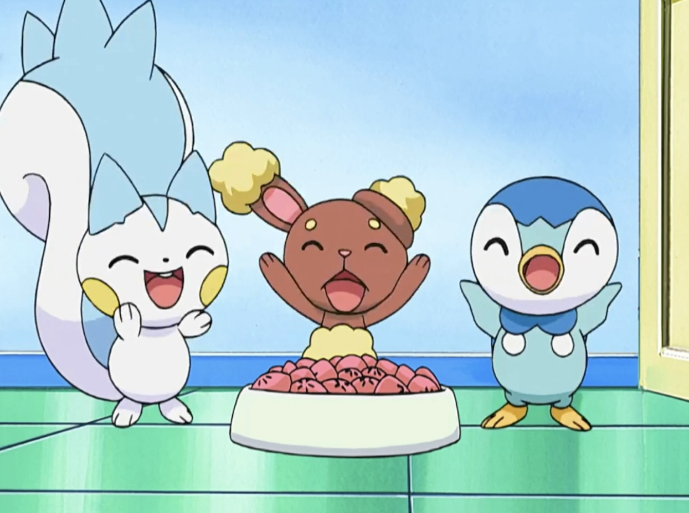
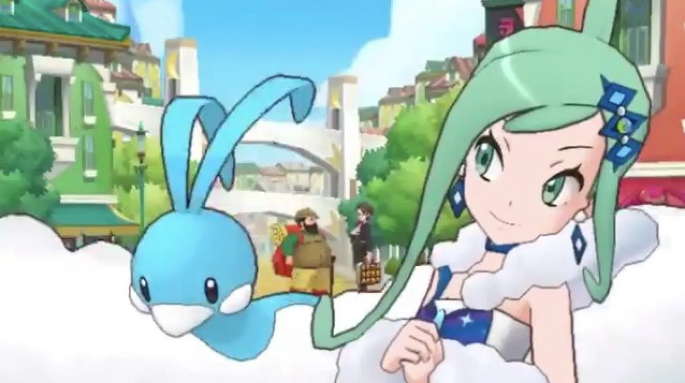
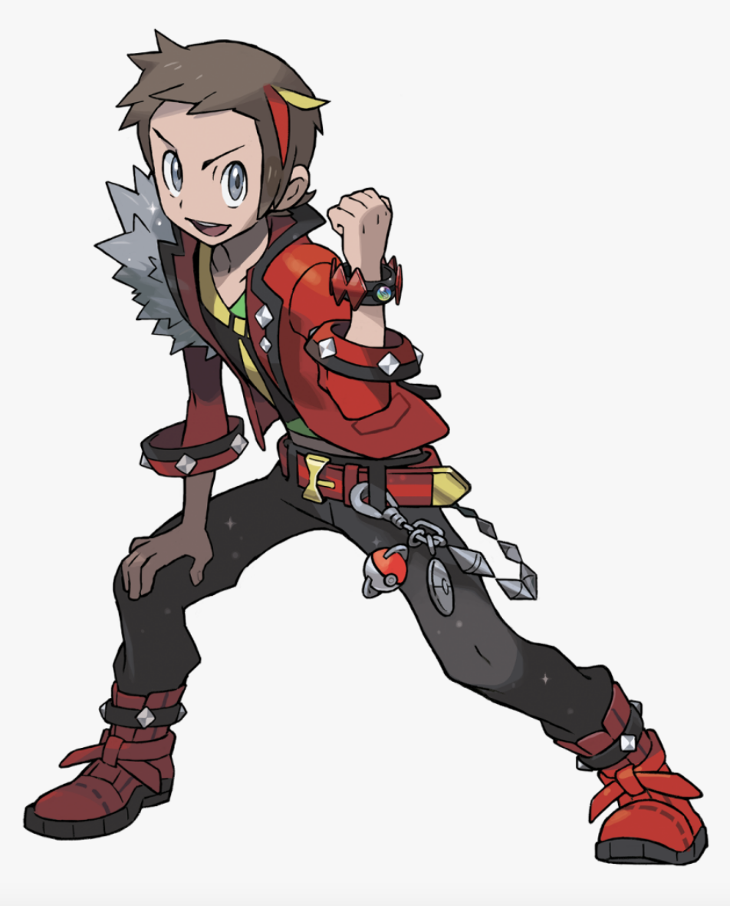
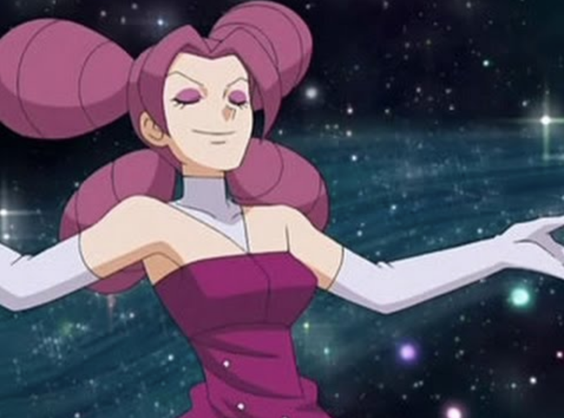
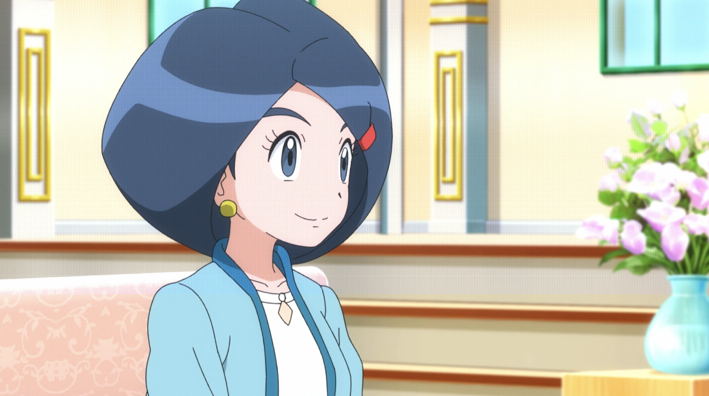
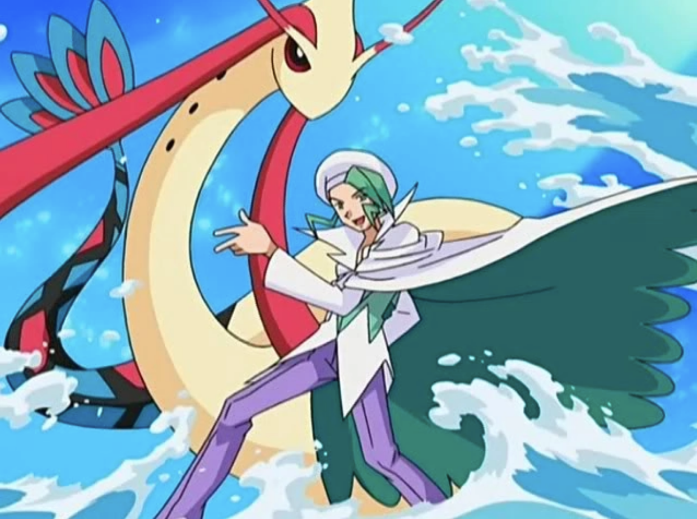
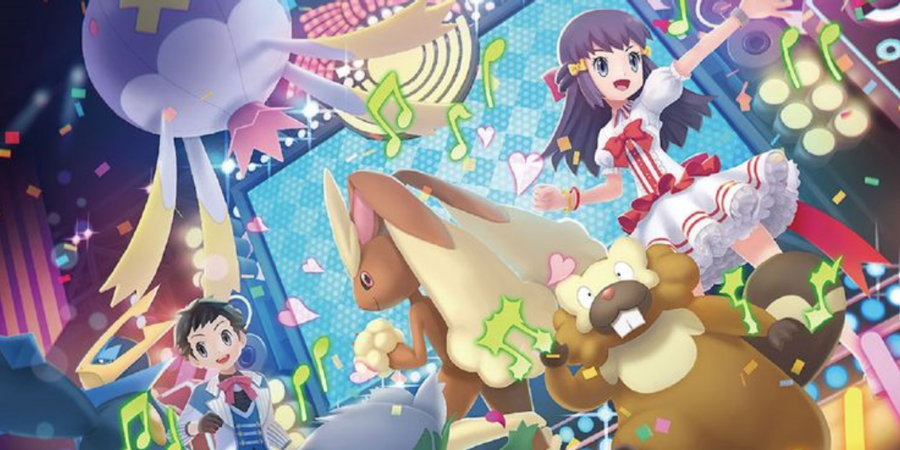
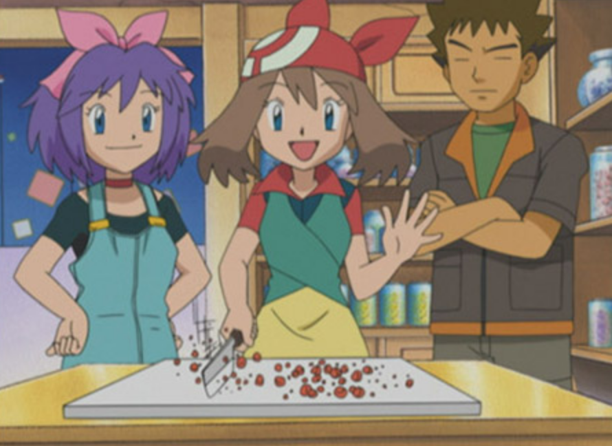
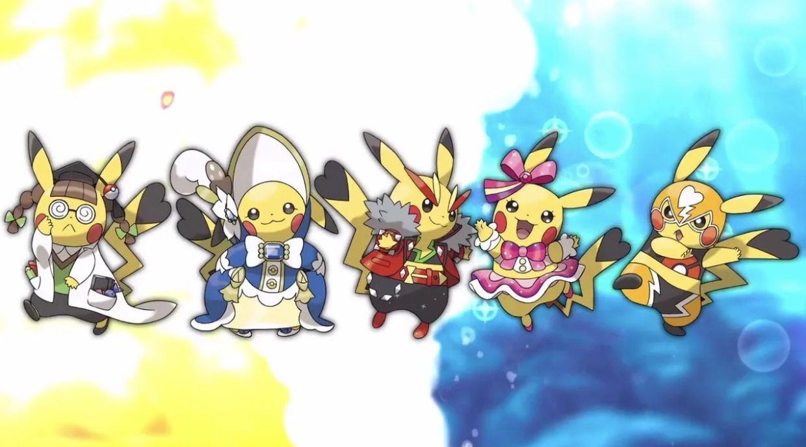

Pokemon Coordinators

Pokemon Coordinators are people in the Pokemon world who dedicate themselves to training Pokemon to perform in contests! This includes making sure your Pokemon are well bred, well fed, and beautiful. These trainers can feed their Pokemon a variety of snacks that help their Pokemon shine in these contests, such as poffins or Pokeblocks. Inside of contests, Pokemon dance, dress up, showcase their attacks in unique ways, and can even showcase other talents that they possess. Attack combinations in contests also help Pokemon gain points or crowd favor when performing, so Coordinators often try to combine moves together that complement each other, such as surf and dive. Some famous Coordinators include Lisia, who trains an Altaria, Johanna, who is the mother of a Pokemon Game protagonist, or Fantina, who is both a Pokemon Coordinator and a Pokemon gym leader.

Pokemon Coordinators tend to have fashionable outfits when they go on stage. Johanna gives her child a special outfit when they attend a contest they can have fancier clothes to wear. Some Pokemon are also more inclined to contests than battling. For example, in the Hoenn region, there is a special Contest Pikachu who loves dressing up and participating in contests so much that it can change its moveset based on the outfit it wears. Though Pokemon Coordinators do not always battle, they need to have a deep understanding of their Pokemon’s moves, just like a trainer would. 
<link rel="icon" href = "images/pokeballfavicon.png">









